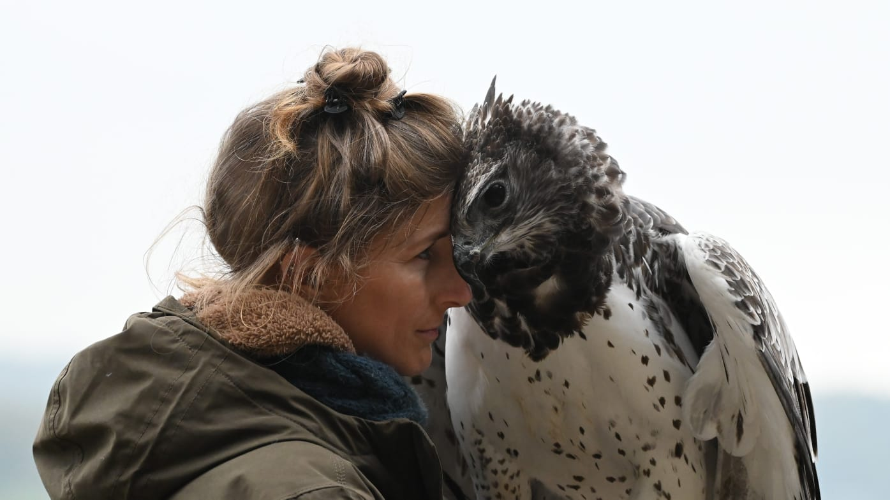

D’une fascination d’enfance pour les rapaces à près de dix-sept années de travail dans plusieurs pays européens, Nathalie Denolf parle à SAYD de confiance, d’une intelligence qui continue de l’étonner et de la frontière entre soins et exploitation. Elle raconte ses expériences avec son aigle Oropherion et défend une fauconnerie responsable, donnant la priorité au bien-être des oiseaux, ainsi qu’une protection qui dépasse les frontières.
Nathalie, comment votre parcours auprès des rapaces a-t-il commencé ? Qu’est-ce qui vous a donné envie de consacrer votre vie à ces créatures magnifiques plutôt que de choisir une autre carrière ?
Ma fascination pour les rapaces remonte à ma plus tendre enfance. Il y a toujours eu chez ces créatures magnifiques quelque chose qui me captivait, bien avant que j’imagine un jour faire de mon travail auprès d’elles un métier.
Le véritable tournant est survenu lorsque je me suis retrouvée face à face avec mon aigle royal. À cet instant, j’ai su, sans l’ombre d’un doute, que c’était à cela que je voulais consacrer ma vie.
En grandissant, j’étais en réalité très timide. Mais travailler avec les rapaces m’a donné une confiance que je n’avais jamais connue auparavant. Auprès de ces animaux, je me sentais parfaitement à l’aise et je n’avais pas besoin d’être quelqu’un d’autre que moi-même.
Près de dix-sept ans plus tard, après avoir travaillé avec des rapaces dans plusieurs pays européens, cette passion n’a fait que grandir. Les rapaces ne m’ont pas seulement offert un métier. Ils ont donné un sens à ma vie.
Dans vos vidéos, nous voyons le lien extraordinaire qui vous unit aux aigles, notamment à Oropherion. Comment une telle confiance se construit-elle entre un être humain et un rapace aussi puissant ? Pensez-vous que ces oiseaux soient capables d’exprimer des émotions semblables à l’amour et à l’affection ?
Je crois que toute relation profonde avec un rapace repose sur la confiance, la patience, le respect et, surtout, la compréhension.
On ne peut pas obliger un aigle à nous faire confiance. Cette confiance se mérite par la constance, la communication et l’apprentissage de sa façon de percevoir le monde, plutôt qu’en attendant de lui qu’il s’adapte au nôtre.
Avec Oropherion, cette relation s’est construite au fil de nos années de travail ensemble. Il sait à quoi s’attendre de ma part, comprend mes intentions et se sent suffisamment à l’aise pour exprimer ses propres préférences et ses limites.
Quant à l’amour et à l’affection, je suis absolument convaincue que les rapaces sont capables de nouer des liens affectifs forts. Nous ne pouvons pas établir scientifiquement s’ils éprouvent l’amour exactement comme les êtres humains, mais cela ne rend pas leurs relations moins importantes.
Oropherion recherche de lui-même la proximité physique, me salue en posant son bec contre mon nez et m’enveloppe souvent de ses immenses ailes.
Ce sont des comportements qu’il choisit d’exprimer, et non quelque chose que j’exige de lui.
Et c’est précisément ce qui rend notre relation si extraordinaire à mes yeux. C’est un animal incroyablement puissant et indépendant, qui a appris à me faire confiance et qui choisit de partager cette proximité avec moi.
« On ne peut pas forcer un aigle à vous faire confiance. »
Au fil de vos années de travail avec les rapaces, avez-vous vécu avec un oiseau en particulier un moment qui a complètement changé votre perception de leur intelligence ou de leur personnalité ? Y a-t-il une histoire que vous n’oublierez jamais ?
Après près de dix-sept ans passés à travailler avec les rapaces, leur intelligence continue de m’intriguer et de me fasciner.
Une expérience avec Oropherion, mon aigle martial, me vient particulièrement à l’esprit.
À plusieurs reprises, des vents violents l’ont emporté dans des bois denses. Avec une envergure d’environ 2,2 mètres, il ne peut pas simplement descendre en vol entre les branches serrées pour me rejoindre.
Mais, au lieu de s’affoler, il trouve lui-même une solution.
Il se déplace dans la canopée, me suivant d’arbre en arbre tandis que je marche en dessous. Nous progressons en quelque sorte ensemble à travers la forêt jusqu’à une clairière, où il revient aussitôt se poser sur mon gant.
Ce qui me fascine, c’est sa capacité à évaluer la situation, à adapter son comportement et à coopérer avec moi pour surmonter un obstacle.
De telles expériences me rappellent que les rapaces sont bien plus intelligents et ingénieux que beaucoup ne le pensent. Lorsqu’on leur propose des jouets d’enrichissement, ils font aussi preuve d’une grande rapidité pour en comprendre le fonctionnement et résoudre les problèmes qu’ils présentent.
Et même après toutes ces années, j’ai toujours le sentiment qu’il nous reste énormément à découvrir sur leurs remarquables facultés mentales.
Certains estiment que la place des rapaces est dans la nature, en liberté dans le ciel, plutôt que dans le dressage ou sous la garde des humains. Quelle est votre réponse à ce débat ? Où situez-vous la limite éthique entre prendre soin d’un oiseau et l’exploiter ?
Je suis tout à fait d’accord pour dire que la place des rapaces est dans la nature et que, dans l’idéal, chaque espèce devrait pouvoir y prospérer. Malheureusement, la réalité est que nous, les humains, avons rendu une grande partie de leur milieu naturel de plus en plus dangereuse.
Nous avons détruit des habitats, appauvri les populations de proies, empoisonné les chaînes alimentaires et créé d’innombrables dangers par notre empiètement sur leurs milieux et les persécutions que nous leur infligeons.
Cependant, ouvrir simplement la porte d’une volière et relâcher un oiseau né en captivité ne revient pas nécessairement à lui rendre sa liberté. Sans les aptitudes à la survie et la préparation nécessaires, cela peut le condamner à mort.
Une prise en charge humaine responsable peut jouer un rôle important dans l’élevage à des fins de conservation, l’éducation, la recherche et l’accueil, dans un environnement sûr, d’oiseaux incapables de survivre dans la nature.
Je crois aussi fermement à la valeur éducative des démonstrations de vol responsables et bien menées. Voir un rapace en vol, observer de près ses aptitudes naturelles et découvrir les difficultés auxquelles sont confrontés ses congénères sauvages est une expérience d’une force extraordinaire.
Cette expérience directe peut transformer la curiosité en admiration, l’admiration en compréhension et, finalement, la compréhension en action. Si quelqu’un repart d’une démonstration avec l’envie de défendre les rapaces ou de soutenir leur conservation, alors nous avons accompli quelque chose de véritablement important.
Mais garder ces animaux implique une responsabilité éthique très claire.
Pour moi, la limite entre le soin et l’exploitation est franchie dès lors que les ambitions humaines, le divertissement ou les intérêts financiers passent avant le bien-être physique et psychologique de l’oiseau.
Un fauconnier responsable doit connaître l’espèce, respecter les besoins et les limites propres à chaque oiseau, lui offrir des conditions de vie adaptées et lui permettre d’exprimer ses comportements naturels.
Mes oiseaux ne sont pas des accessoires dont la seule raison d’être serait de divertir les humains. Ce sont des êtres vivants et intelligents, dont le bien-être doit toujours passer en premier.
Le privilège de travailler avec un rapace ne devrait jamais l’emporter sur la responsabilité que nous avons envers lui.
« Mes oiseaux ne sont pas des accessoires et ne sont pas là simplement pour divertir les humains. »
Vous travaillez au plus près d’aigles, de faucons et de rapaces nocturnes, aux caractéristiques et aux comportements très différents. Qu’est-ce qui vous surprend le plus dans leur intelligence ? Pensez-vous que chaque oiseau possède sa propre personnalité et une manière unique d’interagir avec les humains ?
Absolument ! L’une des choses que j’aime le plus dans mon travail avec les rapaces, c’est de découvrir à quel point ils sont tous différents, même au sein d’une même espèce.
Certains sont incroyablement confiants et curieux, d’autres prudents ou timides. Certains apprécient les interactions rapprochées avec leur fauconnier, tandis que d’autres préfèrent leur indépendance. Ils ont tous leur personnalité, leurs préférences et leur manière de communiquer.
Je les trouve remarquablement perceptifs. Ils remarquent des changements subtils dans notre comportement, notre langage corporel et nos habitudes, et réagissent souvent à des signaux que nous ne sommes même pas conscients de leur envoyer.
Ce qui me surprend le plus, c’est que leur intelligence soit encore si souvent sous-estimée, parfois même par des professionnels qui travaillent avec eux.
Je crois que nous n’avons fait qu’effleurer la compréhension de leurs capacités cognitives.
Plus nous donnons à ces oiseaux la possibilité de réfléchir, d’explorer, de faire des choix et d’exprimer leur personnalité, plus ils nous révèlent à quel point ils sont extraordinaires.
D’après votre expérience, quelles sont aujourd’hui les principales menaces qui pèsent sur les rapaces ? Pensez-vous que les efforts internationaux actuels de conservation suffisent à les protéger de la chasse illégale, de l’empoisonnement et de la disparition de leurs habitats ?
Il ne fait aucun doute que les plus grandes menaces qui pèsent aujourd’hui sur les rapaces sont d’origine humaine.
La destruction des habitats, le déclin des populations de proies, la chasse illégale, les empoisonnements délibérés, l’électrocution sur des lignes électriques dangereuses et le trafic d’animaux sauvages ont tous des conséquences dévastatrices sur les populations de rapaces à travers le monde.
Ce qui me brise particulièrement le cœur, c’est que ces oiseaux sont souvent persécutés simplement parce qu’ils font ce pour quoi la nature les a faits : chasser pour survivre.
Et non, je ne pense pas que nos efforts actuels de conservation soient suffisants.
Des organisations et des personnes extraordinaires travaillent sans relâche pour protéger ces espèces, souvent avec des moyens très limités. Mais les défenseurs de la nature ne peuvent pas continuer à mener un combat à contre-courant tandis que la destruction des habitats, les persécutions et le commerce illégal d’espèces sauvages se poursuivent autour d’eux.
Nous avons besoin d’une application plus rigoureuse des lois existantes de protection de la faune, d’une coopération internationale accrue, d’une meilleure éducation et de davantage d’investissements pour protéger les habitats et faire face aux conflits entre les humains et la faune sauvage.
Nous devons aussi reconnaître que la conservation ne s’arrête pas aux frontières nationales. Les oiseaux migrateurs peuvent parcourir des milliers de kilomètres en traversant de nombreux pays, et ils ont besoin d’être protégés tout au long de leur voyage.
Un oiseau protégé dans un pays ne devrait pas risquer d’être abattu ou piégé dès qu’il entre dans un autre.
En définitive, la conservation ne peut pas réussir grâce aux seuls efforts de quelques organisations dévouées. Elle exige que les gouvernements, les communautés locales, les fauconniers, les chasseurs et le grand public prennent leurs responsabilités.
Nous connaissons déjà bon nombre des menaces auxquelles ces oiseaux magnifiques sont confrontés. Ce dont nous avons désespérément besoin maintenant, c’est d’une détermination collective à agir.
La fauconnerie est une tradition plusieurs fois millénaire, profondément enracinée dans l’histoire de l’Europe comme du monde arabe. Comment la fauconnerie et une chasse responsable peuvent-elles coexister avec la conservation de la faune sauvage ? Selon vous, qu’est-ce qui distingue un fauconnier responsable d’une personne qui exploite les rapaces ?
La fauconnerie possède une histoire extraordinaire, et je trouve très particulière cette tradition qui relie les humains et les rapaces depuis des milliers d’années.
Mais la tradition ne devrait jamais servir de prétexte pour négliger le bien-être animal ou la conservation.
Je crois qu’une fauconnerie responsable et une chasse durable peuvent coexister avec la conservation de la faune sauvage, à condition d’être pratiquées de manière éthique, dans le respect de la loi et avec une réelle considération pour les oiseaux comme pour l’ensemble de l’écosystème.
Pour moi, un fauconnier responsable est quelqu’un qui fait passer le bien-être de son oiseau avant ses ambitions personnelles, comprend ses besoins physiques et comportementaux et accepte de lui consacrer le temps et les efforts considérables que ces animaux exigent.
Un chasseur responsable doit également comprendre les conséquences de ses activités sur les populations sauvages et reconnaître qu’une pratique durable consiste à ne prélever que ce que la nature peut réellement supporter de perdre.
Ce qui m’inquiète, c’est lorsque les rapaces deviennent des symboles de prestige, des possessions dont on peut se débarrasser ou des instruments de divertissement, au lieu d’être traités comme les êtres vivants extraordinaires qu’ils sont.
Je crois aussi que les fauconniers ont une occasion unique de contribuer à la conservation. Nos connaissances, notre expérience et notre passion peuvent être de puissants atouts pour l’éducation, la recherche et la protection des rapaces sauvages.
À mes yeux, la différence entre un fauconnier responsable et une personne qui exploite les rapaces est simple : le premier se demande ce qu’il peut faire pour l’oiseau ; la seconde ne pense qu’à ce que l’oiseau peut faire pour elle.
En définitive, préserver la tradition de la fauconnerie devrait aller de pair avec la préservation des oiseaux et des habitats naturels qui rendent cette tradition possible.
Le Liban se trouve sur l’un des axes migratoires les plus importants au monde pour les rapaces qui voyagent entre l’Europe et l’Afrique. Malheureusement, certains de ces oiseaux sont abattus illégalement au cours de leur migration, parfois simplement pour se divertir ou prendre des photos. Quel message souhaitez-vous adresser à ceux qui tirent sur ces oiseaux magnifiques ?
Je veux être parfaitement claire : abattre un rapace magnifique pour s’amuser, prendre une photo ou obtenir un trophée est un acte de pure lâcheté. Il n’y a ni habileté, ni bravoure, et certainement aucun honneur à tuer un animal sans défense simplement parce qu’on en a la possibilité.
Appuyer sur la détente contre une créature qui ne représente aucune menace pour vous ne vous rend ni puissant, ni courageux, ni plus viril. Bien au contraire. Cela révèle une absence totale de respect pour la vie et pour tout ce que devraient représenter le véritable courage et l’honneur.
Ces oiseaux ont parcouru des milliers de kilomètres, surmonté des épreuves extraordinaires, pour que leur vie soit inutilement interrompue pour le divertissement de quelqu’un.
La véritable mesure du caractère n’est pas le pouvoir que l’on possède sur une créature vulnérable, mais la décence et la compassion dont on fait preuve en la laissant vivre.
Si vous voulez véritablement faire preuve de force et de courage, posez votre arme et défendez cette faune qui ne peut pas se défendre contre vous.
Le Middle East Center for Sustainable Harvest and Anti-Poaching (MECSHAP), par l’intermédiaire de son unité de lutte contre le braconnage, l’Anti-Poaching Unit (APU), œuvre à la protection des oiseaux migrateurs et à la lutte contre la chasse illégale. Quelle importance accordez-vous à la coopération internationale entre fauconniers, spécialistes de la faune sauvage et organisations de conservation présentes sur le terrain pour protéger ces oiseaux tout au long de leurs voies migratoires ?
La coopération internationale est absolument essentielle. La faune sauvage ne connaît pas les frontières politiques, et nos efforts de conservation ne devraient pas s’y arrêter non plus.
Nous ne pouvons pas espérer protéger efficacement les oiseaux migrateurs si nous ne les préservons que dans certains pays, tout en les laissant vulnérables ailleurs sur leur parcours.
Fauconniers, chercheurs spécialisés dans la faune sauvage, organisations de conservation et équipes de lutte contre le braconnage apportent chacun des compétences différentes. En partageant nos connaissances, nos données sur les migrations, nos ressources et notre expérience de terrain, nous pouvons accomplir ensemble bien davantage que n’importe quelle organisation isolée.
J’ai un immense respect pour les personnes qui travaillent sur le terrain contre la chasse illégale. Des organisations comme MECSHAP et leur unité de lutte contre le braconnage jouent un rôle important, car protéger la faune exige davantage que de la sensibilisation. Il faut aussi des personnes prêtes à agir là où ces crimes sont effectivement commis.
Travaillant à la fois dans la fauconnerie et dans la conservation, je crois fermement que nous avons la responsabilité de rapprocher ces communautés et d’œuvrer à un objectif commun.
La conservation ne devrait jamais être une question de reconnaissance individuelle ou de concurrence entre organisations. Elle devrait consister à unir nos forces pour accomplir ce qui compte le plus : maintenir ces oiseaux magnifiques en vie dans la nature.
« Des organisations comme le MECSHAP et son unité de lutte contre le braconnage jouent un rôle important… »
Enfin, si vous pouviez changer une seule chose dans la relation entre les humains et les rapaces, quelle serait-elle ? Et quel message souhaiteriez-vous adresser aux lecteurs de SAYD Magazine, en particulier aux chasseurs et aux amoureux de la nature du monde arabe ?
Si je pouvais changer une seule chose, ce serait la façon dont les humains perçoivent leur place dans le monde naturel.
Nous devons cesser de nous considérer comme les maîtres de la nature et commencer à reconnaître que nous en faisons partie, avec la responsabilité de la protéger.
Les rapaces fascinent l’humanité depuis des milliers d’années. Ils incarnent la force, la liberté et une beauté extraordinaire. Pourtant, nous continuons à détruire les habitats mêmes dont ils dépendent et à les persécuter simplement parce qu’ils suivent leurs instincts naturels.
Aux lecteurs de SAYD Magazine, en particulier aux fauconniers, aux chasseurs et aux amoureux de la nature du monde arabe, je voudrais dire ceci : vous entretenez un lien culturel extraordinaire avec les rapaces, et cet héritage vous offre une occasion tout aussi extraordinaire de contribuer à leur protection.
Que vous soyez fauconnier, chasseur ou simplement admirateur de la faune sauvage, vos choix comptent. Respectez les animaux que vous rencontrez, opposez-vous aux persécutions illégales et transmettez à la génération suivante un véritable amour de la nature.
Tradition et conservation ne devraient jamais être ennemies. Le plus bel héritage que nous puissions laisser ne consiste pas seulement à préserver nos traditions, mais aussi à faire en sorte que la faune qui les a inspirées existe encore pour les générations à venir.
Et, peut-être surtout, souvenez-vous que ces oiseaux magnifiques ne nous appartiennent pas. Nous avons simplement le privilège de partager cette planète avec eux.
Photographie fournie par Nathalie Denolf pour cet entretien.